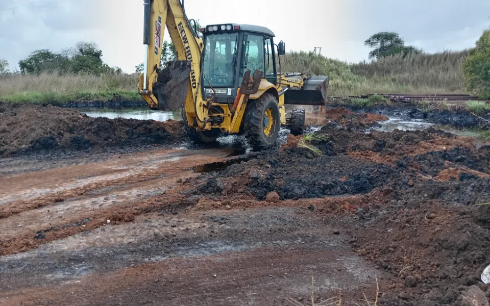
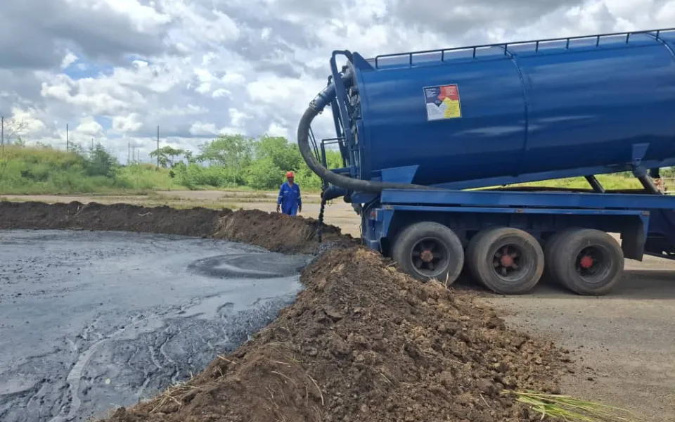
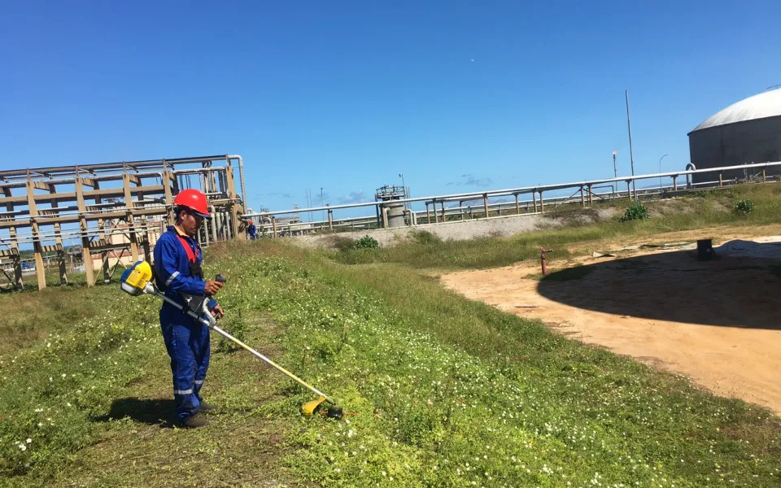
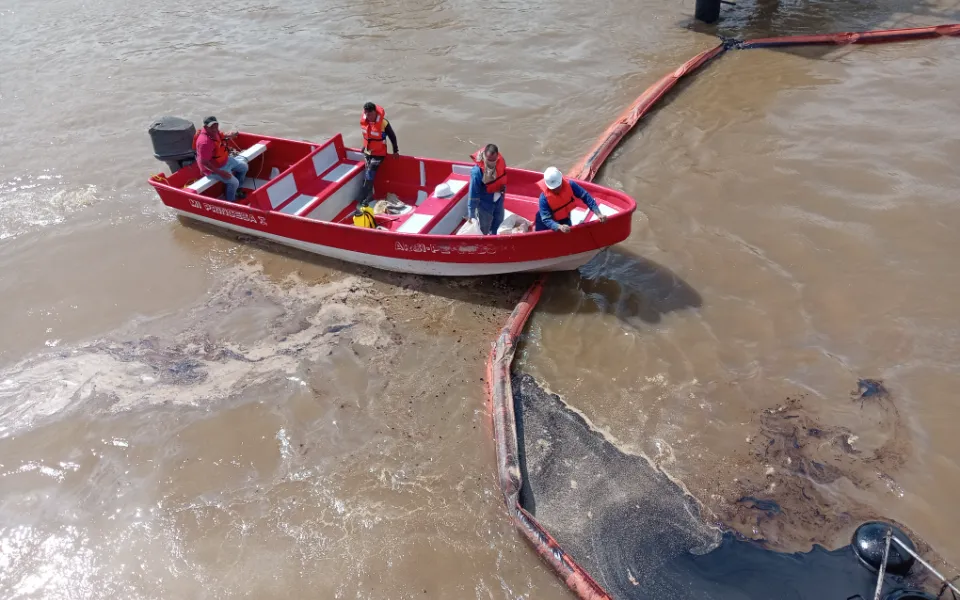
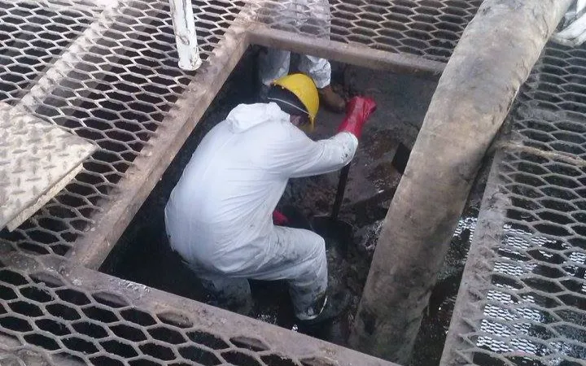
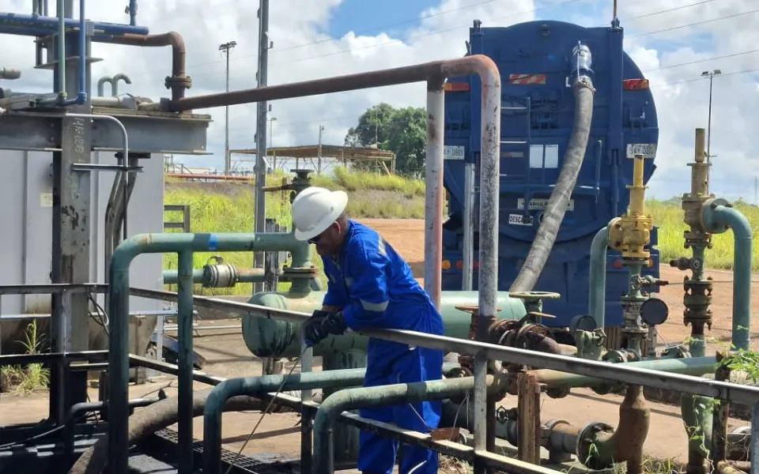
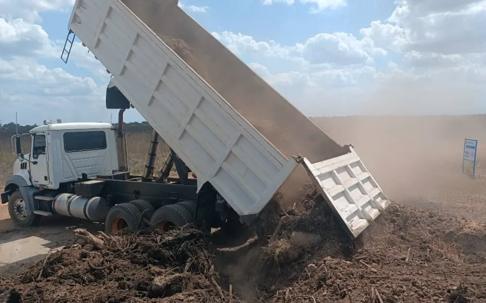
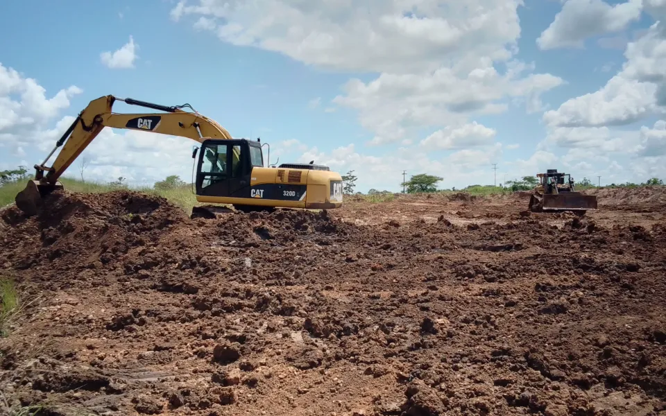
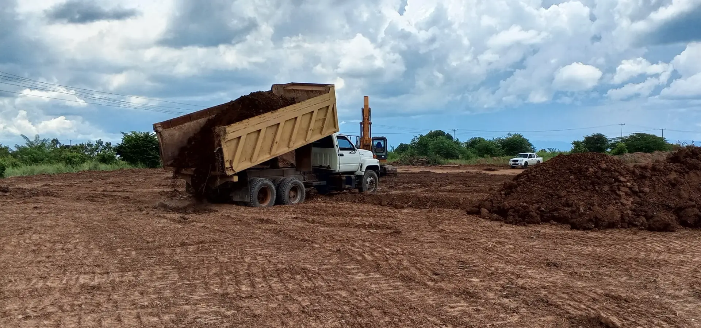

Nuestros servicios
Servicios ambientales para la industria petrolera
Ofrecemos servicios especializados para prevenir, controlar, mitigar y atender impactos ambientales asociados a las operaciones petroleras e industriales.

Saneamiento ambiental petrolero y remediación de áreas impactadas por hidrocarburos
Saneamiento ambiental
Ejecutamos actividades de limpieza, saneamiento y recuperación de áreas afectadas por operaciones industriales y petroleras, incluyendo zonas impactadas por hidrocarburos y otros residuos.
Nuestro objetivo es contribuir a la recuperación de las condiciones ambientales de las áreas intervenidas y favorecer el desarrollo seguro de las operaciones.
Solicitar cotización de este servicio
Desechos peligrosos y no peligrosos
Manejo, tratamiento y disposición final de desechos
Desarrollamos soluciones para la gestión de desechos peligrosos y no peligrosos, desde su manejo y acondicionamiento hasta su tratamiento y disposición final, de acuerdo con las características del material y los requisitos legales aplicables.
Atendemos residuos asociados a operaciones petroleras, tales como lodos y ripios de perforación, borras, suelos contaminados y materiales impregnados con hidrocarburos, así como residuos industriales no peligrosos.
Determinamos las alternativas de tratamiento según la naturaleza del residuo, la evaluación técnica y las condiciones autorizadas para cada operación.
Solicitar cotización de este servicio
Instalaciones, áreas operacionales y derechos de vía
Control de vegetación
Realizamos trabajos de despeje, desmalezado y mantenimiento de vegetación en instalaciones industriales, áreas operacionales, zonas de perforación y derechos de vía.
Estas actividades contribuyen a mantener accesos despejados, mejorar las condiciones de seguridad y facilitar las labores de inspección, mantenimiento y operación de las instalaciones.
Solicitar cotización de este servicio
Control ambiental en operaciones petroleras e industriales
Control ambiental
Implementamos actividades de seguimiento y control ambiental destinadas a identificar, prevenir, mitigar y corregir impactos asociados a las operaciones petroleras e industriales.
Nuestro enfoque integra la supervisión de campo, el cumplimiento de los requisitos aplicables y la aplicación de medidas de control orientadas a la protección del entorno.
Solicitar cotización de este servicio
Operaciones de perforación
Control de sólidos
Ofrecemos servicios de control de sólidos para operaciones de perforación, orientados a separar recortes y partículas no deseadas de los fluidos de perforación.
Estos procesos contribuyen al acondicionamiento de los fluidos, la eficiencia de los equipos y la reducción del volumen de residuos que requieren gestión ambiental.
Solicitar cotización de este servicio
Manejo, acondicionamiento y tratamiento
Fluidos de perforación
Prestamos servicios relacionados con el manejo, acondicionamiento y tratamiento de fluidos de perforación, considerando sus funciones operativas en la lubricación y refrigeración de la mecha, el transporte de recortes y el control de las condiciones del pozo.
Buscamos contribuir a la eficiencia del proceso de perforación y al manejo responsable de los materiales generados durante las operaciones.
Solicitar cotización de este servicio
Materiales, equipos y residuos
Transporte y logística de materiales y residuos
Apoyamos las operaciones industriales mediante servicios de transporte y movilización de materiales, equipos y residuos asociados a las actividades petroleras, de acuerdo con la naturaleza de la carga y las condiciones operativas aplicables.
Solicitar cotización de este servicio
Construcción, mantenimiento y movimiento de tierras
Servicios industriales y apoyo operativo
Complementamos nuestra oferta con actividades de construcción y mantenimiento, movimiento de tierras, excavaciones, recuperación de áreas, mantenimiento de instalaciones y apoyo técnico a proyectos industriales, según los alcances contratados.
Solicitar cotización de este servicio
Nuestra capacidad operativa
Recursos preparados para responder a las exigencias del sector
En SAOCA contamos con equipos y maquinaria propios y a disposición para apoyar la ejecución de proyectos ambientales, industriales y petroleros.
Nuestra flota y nuestros recursos operativos incluyen:
- Retroexcavadoras y equipos para movimiento de tierras.
- Camiones de volteo, camiones plataforma y camión cisterna.
- Tractor y payloader.
- Equipos de control de sólidos.
- Tanque de almacenamiento.
- Equipos de soldadura y oxicorte.
- Desmalezadoras, fumigadoras y motobombas.
- Equipos de vacío y succión.
- Vehículos de transporte y apoyo operativo.
- Equipos de topografía y unidades de oficina móviles.
Establecemos la disponibilidad de los equipos de acuerdo con las necesidades y el alcance de cada proyecto.
Galería
Operaciones y áreas de trabajo
Registro fotográfico de nuestras labores de campo, equipos y personal en operaciones ambientales e industriales.
Preguntas frecuentes
Cómo iniciar una solicitud de servicio
Orientación para responsables de operaciones, mantenimiento, ambiente, seguridad y contratación.
Necesitamos conocer el tipo de servicio requerido, la ubicación de la instalación o del área de trabajo, las características del área o del material involucrado, el alcance esperado y los plazos previstos. Con esta información analizamos el requerimiento y definimos las actividades y los recursos necesarios.
Determinamos las alternativas de tratamiento según la naturaleza del residuo, la evaluación técnica y las condiciones autorizadas para cada operación, de acuerdo con las características del material y los requisitos legales aplicables.
Gestionamos residuos asociados a operaciones petroleras, como lodos y ripios de perforación, borras, suelos contaminados y materiales impregnados con hidrocarburos, así como residuos industriales no peligrosos. Atendemos desde su manejo y acondicionamiento hasta su tratamiento y disposición final.
Coordinamos nuestros servicios con los responsables de las operaciones para adaptar la ejecución a las condiciones del área y a las normas de seguridad de cada instalación. La coordinación entre nuestro personal técnico, los recursos operativos y la gestión del proyecto nos permite responder a los requerimientos de cada cliente.
Evaluamos las características del área afectada, el tipo de residuo o contaminante involucrado —por ejemplo, hidrocarburos— y las condiciones operativas del lugar. A partir de esta evaluación definimos las actividades de limpieza, saneamiento y recuperación necesarias y los recursos que requiere el trabajo.
¿Necesita una solución para su operación?
Conversemos sobre los requerimientos de su proyecto y las alternativas técnicas disponibles.